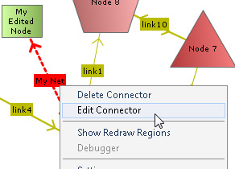
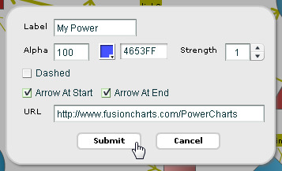
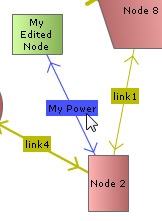
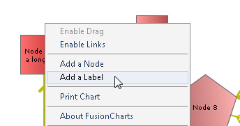
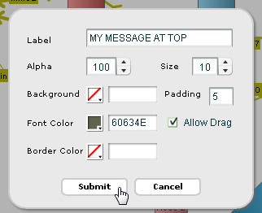

This section is meant for users who have implemented v3.x.y (e.g., 3.0.6, 3.0.7, 3.1.1 etc.) of PowerCharts in their applications and are now upgrading to PowerCharts v3.2.
All the features of PowerCharts v3.2 are backward compatible with PowerCharts v3.1. Hence, upgrade is as easy as copy-pasting files. Listed below are the things that you need to take care of while upgrading:
- Copy all chart SWF files from Download Pack > Charts folder and replace your existing chart SWF files in your deployed folder.
- Copy the new FusionCharts.js from Download Pack > Charts folder and over-write the existing FusionCharts.js in your deployed application folder.
- v3.2 pack contains 2 new JavaScript files, highcharts.js and jquery.min.js, which you need to copy to the same folder as FusionCharts.js.
- Clear your browser cache (very important step).
- If required, use the latest client-side export components (FusionChartsExportComponent.js and FCExporter.swf) from Download Pack > Charts folder
- If required, use the latest server-side export handlers from Download Pack > ExportHandlers folder
- If required, use the latest Server Side wrapper classes present in the Download Pack > Code folder
The above steps will convert all your v3.x.y charts to v3.2. You don't have to modify any code, as all the charts are backward compatible. However, if you wish to make use of any new chart type or new features, then you will have to modify your code to include the same. Given below are details of code changes required for implementing some of the new features introduced in PowerCharts v3.2
After you've made the above changes, your charts are automatically ready for iPad/iPhone. This has been made possible by the new FusionCharts.js, which provides automatic fallback of charts (using highcharts.js). FusionCharts JavaScript class is capable of detecting whether the browser in running in iPad, iPhone or iPod and it switches to pure JavaScript based rendering architecture.
If you wish to use JavaScript charting only (and not use Flash at all), you can convert you existing charts to pure JavaScript based charts (HTML5) by adding a single line of code. All you need to do is write FusionCharts.setCurrentRenderer('javascript') before you call FusionCharts constructor in your existing implementation.
<html>
<head>
<title>My First chart using FusionCharts - Using JavaScript</title>
<script type="text/javascript" src="FusionCharts/FusionCharts.js"></script>
</head>
<body>
<div id="chartContainer">FusionCharts will load here!</div>
<script type="text/javascript"><!--
FusionCharts.setCurrentRenderer('javascript');
var myChart = new FusionCharts( "FusionCharts/Spline.swf",
"myChartId", "400", "300", "0", "1" );
myChart.setXMLUrl("Data.xml");
myChart.render("chartContainer");
// -->
</script>
</body>
</html>
By default, FusionCharts automatically renders JavaScript based charts when it detects iPad or iPhone. However, you can also configure FusionCharts to switch to JavaScript rendering whenever the required Flash Player is not available, irrespective of device, browser or OS. You just need to call FusionCharts._fallbackJSChartWhenNoFlash() and you are done!
<html>
<head>
<title>My First chart using FusionCharts - Using JavaScript</title>
<script type="text/javascript" src="FusionCharts/FusionCharts.js"></script>
</head>
<body>
<div id="chartContainer">FusionCharts will load here!</div>
<script type="text/javascript"><!--
FusionCharts._fallbackJSChartWhenNoFlash();
var myChart = new FusionCharts( "FusionCharts/Spline.swf",
"myChartId", "400", "300", "0", "1" );
myChart.setXMLUrl("Data.xml");
myChart.render("chartContainer");
// -->
</script>
</body>
Note that this will switch to JavaScript rendering for browsers that either does not have the capability to render Flash content or if they have Flash Player version less than 8.0
FusionCharts JavaScript class allows you to handle events using advanced JavaScript event model. You can use addEventListener() function to each chart object or global FusionCharts class to listen to various events related to chart loading, rendering, resizing, creating LinkedCharts, printing, error handling etc. If you intend to make use of the new JavaScript events or methods exposed in v3.2, you'll have to make the necessary modifications in your code. You would need to get the chart reference and define the event listener function. You can define a function separately and pass the reference to the function to the addEventListener(). You can also declare a anonymous function along with the addEventListener() function call itself. The code below shows the two models:
<html>
<head>
<title>FusionCharts - listen to DrawComplete event</title>
<script type="text/javascript" src="FusionCharts/FusionCharts.js">
</script>
</head>
<body>
<div id="chartContainer">FusionCharts will load here!</div>
<script type="text/javascript"><!--
var myChart = new FusionCharts( "FusionCharts/Spline.swf",
"myChartId", "400", "300", "0", "1" );
myChart.setXMLUrl("Data.xml");
myChart.render("chartContainer");
function myChartListener(event, parameter)
{
alert( event.sender.id + " has completed chart drawing" );
}
FusionCharts("myChartId").addEventListener ("DrawComplete" , myChartListener );
// -->
</script>
</body>
</html>
<html>
<head>
<title>FusionCharts - listen to DrawComplete event</title>
<script type="text/javascript" src="FusionCharts/FusionCharts.js">
</script>
</head>
<body>
<div id="chartContainer">FusionCharts will load here!</div>
<script type="text/javascript"><!--
var myChart = new FusionCharts( "FusionCharts/Spline.swf",
"myChartId", "400", "300", "0", "1" );
myChart.setXMLUrl("Data.xml");
myChart.render("chartContainer");
FusionCharts("myChartId").addEventListener ("DrawComplete" ,
function(event, parameter)
{
alert( event.sender.id + " has completed chart drawing" );
}
);
// -->
</script>
</body>
</html>
The above code listens to DrawComplete event and shows a JavaScript alert when the event gets fired. To get details of each event please read FusionCharts and JavaScript > API Reference > Events page.
Existing JavaScript implementations using FC_Rendered or FC_Loaded events would continue to function without any problem.
FusionCharts JavaScript class now provides you with a large set of functions to work with. Using these functions you can do the following:
- You can create pure JavaScript based charts (not Flash)
- You can use the object oriented JavaScript implementation methods
- You can make use of new data providing functions like setXMLUrl, setXMLData, setChartData, setChartDataUrl
- You can use the static function FusionCharts to access all chart instances present in a page
- You can configure and create 'LinkedCharts' which is a smart drill-down feature introduced in v3.2
- It also introduces better printing support for all Mozilla based browsers using the PrintManager class
- It allows you support for better error management and debugging.
- You can set properties of an existing chart using setChartAttribute() function
- You can provide chart data in JSON format using setJSONUrl,setJSONDData, setChartData, setChartDataUrl functions
- You can update an existing chart's data using chart's native AJAX capabilities or browser's AJAX support
- It provides API to get data back from chart in XML/JSON/CSV format
- It provides API function like isActive() to check the rendering state of a chart
- You can duplicate an existing chart's configurations using clone() function
- You can remove and clean a chart object and free as much memory as possible using dispose() function
- You can make use of better and advanced JavaScript event model (using addEventListener function) to listen to all events
Existing JavaScript implementations using setDataURL() or setDataXML() would continue to function without any problem.
Most charts in PowerCharts can now resize automatically as per the changed size of the container element. The charts can accept width and height in percent (%) and scale in percent with respect to the containers' size. Whenever a container's size changes, the chart automatically resizes itself with respect to the new size of the container element. To achieve this, all you need to do is set percent values in while defining a chart width and height. Rest is taken care by the chart itself. For more details on dynamic-resizing, please see Changing chart dimensions page from "Creating your first chart" section. A sample chart constructor might look like :
new FusionCharts("Spline.swf","myChartId", "80%", "100%", "0", "1");
In the example below, we've created a very basic sample where the chart would fill up the whole web browser's space and if the browser's size is changed, the chart would resize itself. Note the width and height declared for BODY and DIV elements using CSS.
<html>
<head>
<title>My First chart using FusionCharts
- Using dynamically re sizable chart</title>
<script type="text/javascript" src="FusionCharts/FusionCharts.js"></script>
</head>
<body style="height:100%;">
<div id="chartContainer" style="height:100%;" >
FusionCharts will load here</div>
<script type="text/javascript"><!--
var myChart = new FusionCharts("FusionCharts/SplineArea.swf",
"myChartId", "100%", "100%", "0", "1");
myChart.setXMLUrl("LargeData.xml");
myChart.render("chartContainer");
// -->
</script>
</body>
</html>
In the above code we have:
- Set the height of the body to be 100%
- Set the height of the container DIV to 100%, which means that it would vertically fill up the body space of the HTML
- Set the chart's width and height to 100%
The chart being a direct child of the whole page, it would dynamically change its size as per the change in the width and height of the browser. You can apply the same concept with HTML containers instead of taking the whole page. All you need to do is put the chart inside the container setting percentage width and height.
Note: This feature is not available on the interactive charts like Drag Column, Drag Line, Drag Area, Drag Node and Select Scatter chart.
FusionCharts/PowerCharts v3.2 provides a feature that correctly prints charts from Firefox, Safari or other Mozilla/WebKit/Gecko based browsers. We call it Managed Printing. This is managed by adding a single line of code in the page :
FusionCharts.printManager.enabled(true);
This feature, when enabled, prepares the charts in the page for printing. Once preparation is complete, you can print the page with all charts in the page either using File > Print menu of the browser or using code :
FusionCharts.printManager.managedPrint();
The Print Manager internally does the following to achieve this :
- Once a chart is rendered, it silently gathers all aspects of the image data of the present state of the chart
- It converts the image data into image using canvas HTML object
- It hides the canvas image below the chart
- When print is invoked, a parallel CSS based print media layout is created
- In this print media layout, the Flash based chart is hidden and the canvas image is displayed
- This layout with the canvas image is sent to the printer for print
Print Manager also fires events when it has all the charts ready for managed print. The code below shows how it works:
FusionCharts.addEventListener (
FusionChartsEvents.PrintReadyStateChange ,
function (identifier, parameter) {
if(parameter.ready){
alert("Chart is now ready for printing.");
document.getElementById('printButton').disabled = false;
}
});
Note that PrintReadyStateChange event is a global event. Thus, this event can not be listened from individual chart instance. Only FusionCharts static class can listen to this event.
The parameters event argument contains a property ready. This returns true when the Print Manager is ready to print all charts in a page. Once true is returned by the event, we show an information using JavaScript alert message-box and also enable the button, which was disabled prior to this.
Now you can try printing from File → Print menu. You can also use a button or any function that calls window.print() function.
You can also use the following code to print the whole page using FusionCharts JavaScript class:
FusionCharts.printManager.managedPrint();
Please note that the Manged Print feature is not available in Drag Node, Drag Column 2D, Drag Line and Drag Area charts after the data of these charts are interactively changed at run-time.
Apart from XML, FusionCharts can also accept JSON data format. This functionality is provided by FusionCharts.js JavaScript class. You can pass chart JSON data in one of the three formats: it can use a JSON URL/feed, a JSON Object (in JavaScript) or JSON String. The functions that help in accepting JSON data are setJSONUrl, setJSONData, setChartData, setChartDataUrl. Below are some examples of passing JSON data:
myChart.setJSONUrl("Data.json");
...
myChart.setJSONData {
"chart": {
"caption" : "Weekly Sales Summary" ,
"xAxisName" : "Week",
"yAxisName" : "Sales",
"numberPrefix" : "$"
},
"data" :
[
{ "label" : "Week 1", "value" : "14400" },
{ "label" : "Week 2", "value" : "19600" },
{ "label" : "Week 3", "value" : "24000" },
{ "label" : "Week 4", "value" : "15700" }
]
}
);
When running the charts from a local file system, JSON data would not work on certain browsers due to security limitations of AJAX. You will need to run the charts on a server (localhost or remote) to make it work. Also make sure that your server is mapped to the mime-type for .json file extension.
FusionCharts v3.2 introduces interactive legend which most of the charts support. The interactive legend allows end users to click on legend icon to show or hide the particular data series.
Apart from being interactive, legend now provides visual icons pertinent to the data series i.e., column icon for a column data series. Generally, these icons are drawn at a size that appears best on the chart.
You can configure size of these icons using legendIconScale attribute of the <chart> element.
<charts legendIconScale='1.75' ...>
The scale value ranges from 0-5 where the default scale value is 1. Anything less than 1 reduces the size of the legend-icons on the chart. Any value bigger than 1 increase the size of the icons. Hence, .5 means half the size where as 2 means twice the size of the default icon size.
Note that legendMarkerCircle attribute has been dropped in all the charts. This attribute used to set circular legend shapes. Due to the introduction of legend icons, which offer advanced visualization and interactive features, this feature has been deprecated.
Drag-node chart now allows to edit nodes at run time. Steps followed to edit a node are:


Drag node chart now allows to edit a connector at run time. Steps to edit a connector are:


The edited connector will look like:
In drag node chart you can now add text labels at run time. The steps are as followed:


The chart with a new label added at run time looks as under:

It is now possible to add quadrants and their labels to Select Scatter and Error Scatter charts. To add quadrants, you need to use drawQuadrant='1' in the <chart> element of XML data.This makes the quadrant lines intercept exactly at the middle of the chart.
<charts drawQuadrant='1' ...>
Apart from setting quadrant on, you can also set the interception position of the horizontal and vertical lines using two attributes - quadrantXVal and quadrantYVal. These two attributes accept values relative to X Axis and Y Axis and act as the X and Y interception point.
<charts quadrantXVal='40' quadrantYVal='55' ...>
There are 6 attributes that configure the quadrant lines. These are quadrantLineColor, quadrantLineThickness, quadrantLineAlpha, quadrantLineIsDashed, quadrantLineDashLen and quadrantLineDashGap.
Each quadrant can be set with a text label. We name each quadrant as 'top-left', 'top-right' , 'bottom-left' and 'bottom-right'. To set label to each of these quadrants you need to set label values in these attributes - quadrantLabelTL, quadrantLabelTR, quadrantLabelBL and quadrantLabelBR.
To add some padding space between quadrant labels and chart canvas borders, use quadrantLabelPadding attribute.
It is now possible to set alignment of chart caption and sub caption with respect to the chart canvas. You can achieve this using align attribute in Font style definition. This attribute is only applicable for CAPTION and SUBCAPTION objects of the chart. Let's see an example which set left alignment to the caption and right alignment to the sub caption.
<styles>
<definition>
<style name='LeftAlignCaption' type='font' align='left'/>
<style name='RightAlignSubCaption' type='font' align='right'/>
</definition>
<application>
<apply toObject='CAPTION' styles='LeftAlignCaption' />
<apply toObject='SUBCAPTION' styles='RightAlignSubCaption' />
</application>
</styles>
{
...
"styles":[{
"definition":[{
"style":[
{ "name":"LeftAlignCaption", "type":"font", "align":"left" },
{ "name":"RightAlignSubCaption", "type":"font", "align":"right" }
]
}],
"application":[{
"apply": [
{ "toobject":"CAPTION", "styles":"LeftAlignCaption" },
{ "toobject":"SUBCAPTION", "styles":"RightAlignSubCaption" }
]
}]
}]
}
FusionCharts JavaScript library provides an option to set a chart attribute at run-time. This is as easy as calling a simple function. You just need to get the chart handler object and call setChartAttribute() function. Let's see a sample code where we change the caption of the chart:
var weekly_sales_chart = FusionCharts.items['JanuaryChartId']; weekly_sales_chart.setChartAttribute( "caption", "Updated Sales figures for the month of January" );
In the code above, we get the chart handler from FusionCharts.items Array passing the DOMId of the chart. Next, we call setChartAttribute() function and pass two parameters to it. The first parameter is the name of the attribute that needs to be changed. The second parameter provides the new value of the attribute that needs to be set. Here we pass "caption" as the attribute name and set it's new value to "Updated Sales figures for the month of January".
In FusionCharts v3.2, whenever an attribute of chart is changed, the entire chart is re-drawn without animation. Hence, SetChartAttribute function does not work on Drag Node, Drag Column, Drag Line, Drag Area and Select Scatter charts since these charts are modifiable at run-time.
In order to stop clutter and overlapping of anchor-values of a line chart FusionCharts v3.2 introduces a new attribute - valuePosition. If you've opted to show data values on the chart, this attribute lets you adjust the vertical alignment of data values with respect to dataplots. By default, this attribute is set to AUTO mode in which the alignment of each data value is determined automatically based on the position of each plot point. When the mode is set to 'ABOVE', data values are displayed above the plot points unless a plot point is too close to the upper edge of the canvas In BELOW mode, data values are displayed below the plot points unless a plot point is too close to the lower edge of the canvas. The attribute can be set in <chart> element or <set> element of the chart XML. If the attribute is given in <set> element, it overrides the global attribute value set in <chart> element. The sample data below shows how you can use this attribute:
<chart showValues='1' valuePosition='auto' rotateValues='1'
caption='Monthly Revenue' subcaption='Month' yAxisName='Revenue' numberPrefix='$' >
<set label='Jan' value='420000' />
<set label='Feb' value='910000' />
<set label='Mar' value='720000' valuePosition='bottom' />
<set label='Apr' value='550000' valuePosition='bottom' />
<set label='May' value='810000' valuePosition='above' />
<set label='Jun' value='510000' valuePosition='auto' />
</chart>{
"chart":{
"showvalues":"1",
"valueposition":"auto",
"rotatevalues":"1",
"caption":"Monthly Revenue",
"subcaption":"Month",
"yaxisname":"Revenue",
"numberprefix":"$"
},
"data":[
{ "label":"Jan", "value":"420000" },
{ "label":"Feb", "value":"910000" },
{ "label":"Mar", "value":"720000", "valueposition":"bottom" },
{ "label":"Apr", "value":"550000", "valueposition":"bottom" },
{ "label":"May", "value":"810000", "valueposition":"above" },
{ "label":"Jun", "value":"510000", "valueposition":"auto" }
]
}
Note the use of valuePosition in chart global settings as well as valuePosition in each dataplot. The settings provided in dataplot overrides the settings of the top.